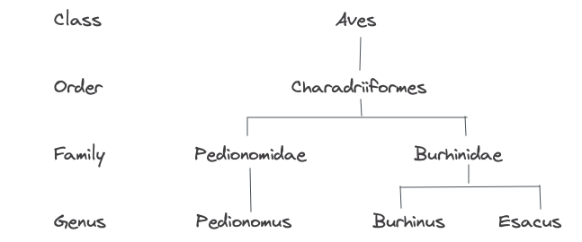
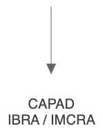
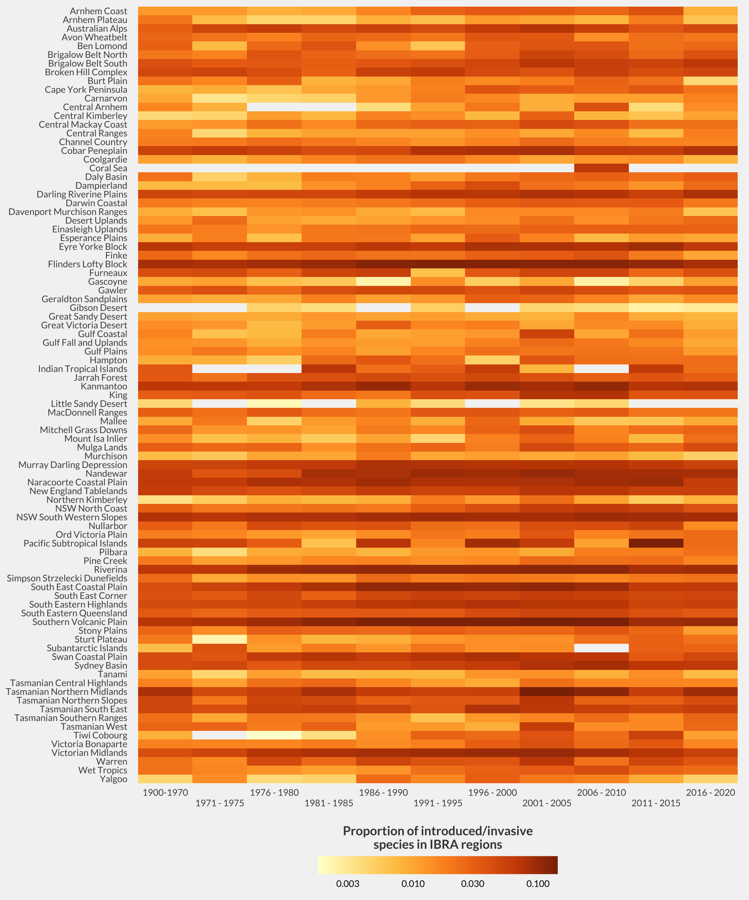
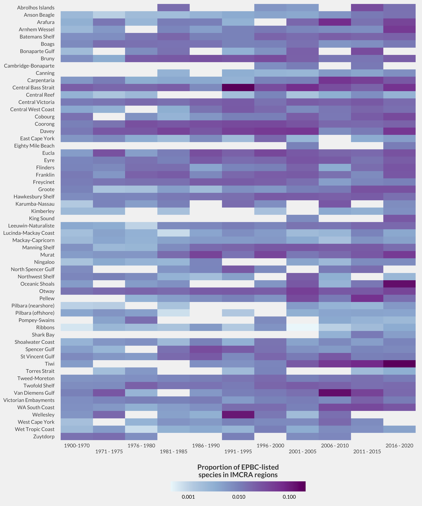

| Description | Filter |
|---|---|
| Exclude all records where spatial validity is "false" | -spatiallyValid:"false" |
| Exclude all records with an assertion that the scientific name provided does not match any of the names lists used by the ALA. For a full explanation of the ALA name matching process see https://github.com/AtlasOfLivingAustralia/ala-name-matching | -assertions:TAXON_MATCH_NONE |
| Exclude all records with an assertion that the scientific name provided is not structured as a valid scientific name. Also catches rank values or values such as "UNKNOWN" | -assertions:INVALID_SCIENTIFIC_NAME |
| Exclude all records with an assertion that the name and classification supplied can't be used to choose between 2 homonyms | -assertions:TAXON_HOMONYM |
| Exclude all records with an assertion that kingdom provided doesn't match a known kingdom e.g. Animalia, Plantae | -assertions:UNKNOWN_KINGDOM |
| Exclude all records with an assertion that the scientific name provided in the record does not match the expected taxonomic scope of the resource e.g. Mammal records attributed to bird watch group | -assertions:TAXON_SCOPE_MISMATCH |
| Exclude all records with an assertion of the occurence is cultivated or escaped from captivity | -establishmentMeans:"MANAGED" |
| Exclude all records with an assertion of latitude value provided is zero | -decimalLatitude:0 |
| Exclude all records with an assertion of longitude value provided is zero | -decimalLongitude:0 |
| Exclude all records with an assertion of latitude and longitude have been transposed | -assertions:"PRESUMED_SWAPPED_COORDINATE" |
| Exclude all records with an assertion of coordinates are the exact centre of the state or territory | -assertions:"COORDINATES_CENTRE_OF_STATEPROVINCE" |
| Exclude all records with an assertion of coordinates are the exact centre of the country | -assertions:"COORDINATES_CENTRE_OF_COUNTRY" |
| Exclude all records with "Latitude is negated" warning | -assertions:"PRESUMED_NEGATED_LATITUDE" |
| Exclude all records with "Longitude is negated" warning | -assertions:"PRESUMED_NEGATED_LONGITUDE" |
| Exclude duplicates from different datasets that are not the representative record | -(duplicate_status:"ASSOCIATED" AND duplicateType:"DIFFERENT_DATASET") |
| Exclude all records where coordinate uncertainty (in metres) is greater than 10km | -coordinateUncertaintyInMeters:[10001 TO *] |
| Exclude all records with unresolved user assertions | -userAssertions:50001 |
| Exclude all records with unconfirmed user assertions | -userAssertions:50005 |
| Exclude all records where outlier layer count is 3 or more | -outlierLayerCount:[3 TO *] |
| Exclude all records where Record type is "Fossil specimen" | -basisOfRecord:"FOSSIL_SPECIMEN" |
| Exclude all records where Record type is "EnvironmentalDNA" | -(basisOfRecord:"MATERIAL_SAMPLE" AND contentTypes:"EnvironmentalDNA") |
| Exclude all records where Presence/Absence is "absent" | -occurrenceStatus:ABSENT |
| Exclude all records where year is prior to 1700 | -year:[* TO 1700] |
EcoAssets Building data linkages for
environmental reporting Shandiya Balasubramaniam (she/her)
@ShandiyaB
Data Analyst | Atlas of Living Australia
ESA-SCBO 2022
I acknowledge the Traditional Owners of the lands on which I live and work, the Wurundjeri People of the Kulin Nation, and pay my respects to Elders past and present. I recognise the spiritual and cultural significance of land, water, and all that is in the environment to Traditional Owners, and their continuing connection to Country.
EcoAssets
EcoAssets Atlas of Living Australia • Terrestrial Ecosystem Research Network • Integrated Marine Observing System
EcoAssets [Building data linkages for environmental reporting]
EcoAssets: Focus Areas
EcoAssets: Focus Areas Improve data pipelines
EcoAssets: Focus Areas Improve data pipelines • Deliver aggregated datasets
EcoAssets: Focus Areas Improve data pipelines • Deliver aggregated datasets • Support ongoing versioning
ALA General Profile
| Description | Filter |
|---|---|


• Occurrence •
Location • Occurrence •

Location • Occurrence • Classification

Location • Occurrence • Classification
Location • Occurrence • Classification
| ibraRegion | yearStart | yearEnd | griisStatus | recordCount | speciesCount |
|---|---|---|---|---|---|
| Arnhem Coast | 1900 | 1970 | Introduced | 206 | 19 |
| Arnhem Coast | 1900 | 1970 | Invasive | 11 | 3 |
| Arnhem Coast | 1900 | 1970 | Native | 7754 | 1791 |
| Arnhem Coast | 1971 | 1975 | Introduced | 49 | 19 |
| Arnhem Coast | 1971 | 1975 | Invasive | 1 | 1 |
| Arnhem Coast | 1971 | 1975 | Native | 5570 | 1658 |
| Arnhem Coast | 1976 | 1980 | Introduced | 11 | 8 |
| Arnhem Coast | 1976 | 1980 | Invasive | 2 | 2 |
| Arnhem Coast | 1976 | 1980 | Native | 5945 | 1163 |
| Arnhem Coast | 1981 | 1985 | Introduced | 15 | 10 |
| Arnhem Coast | 1981 | 1985 | Invasive | 1 | 1 |
| Arnhem Coast | 1981 | 1985 | Native | 3032 | 1116 |
| Arnhem Coast | 1986 | 1990 | Introduced | 72 | 26 |
| Arnhem Coast | 1986 | 1990 | Invasive | 12 | 3 |
| Arnhem Coast | 1986 | 1990 | Native | 14929 | 1736 |
| Arnhem Coast | 1991 | 1995 | Introduced | 199 | 41 |
| Arnhem Coast | 1991 | 1995 | Invasive | 20 | 6 |
| Arnhem Coast | 1991 | 1995 | Native | 12067 | 1572 |
| Arnhem Coast | 1996 | 2000 | Introduced | 602 | 59 |
| Arnhem Coast | 1996 | 2000 | Invasive | 152 | 6 |
| ibraRegion | yearStart | yearEnd | griisStatus | recordCount | speciesCount |
|---|---|---|---|---|---|
| Arnhem Coast | 1900 | 1970 | Introduced | 206 | 19 |
| Arnhem Coast | 1900 | 1970 | Invasive | 11 | 3 |
| Arnhem Coast | 1900 | 1970 | Native | 7754 | 1791 |
| Arnhem Coast | 1971 | 1975 | Introduced | 49 | 19 |
| Arnhem Coast | 1971 | 1975 | Invasive | 1 | 1 |
| Arnhem Coast | 1971 | 1975 | Native | 5570 | 1658 |
| Arnhem Coast | 1976 | 1980 | Introduced | 11 | 8 |
| Arnhem Coast | 1976 | 1980 | Invasive | 2 | 2 |
| Arnhem Coast | 1976 | 1980 | Native | 5945 | 1163 |
| Arnhem Coast | 1981 | 1985 | Introduced | 15 | 10 |
| Arnhem Coast | 1981 | 1985 | Invasive | 1 | 1 |
| Arnhem Coast | 1981 | 1985 | Native | 3032 | 1116 |
| Arnhem Coast | 1986 | 1990 | Introduced | 72 | 26 |
| Arnhem Coast | 1986 | 1990 | Invasive | 12 | 3 |

| imcraRegion | yearStart | yearEnd | epbcStatus | recordCount | speciesCount |
|---|---|---|---|---|---|
| Abrolhos Islands | 1900 | 1970 | Not listed | 1054 | 401 |
| Abrolhos Islands | 1971 | 1975 | Not listed | 291 | 149 |
| Abrolhos Islands | 1976 | 1980 | Not listed | 407 | 200 |
| Abrolhos Islands | 1981 | 1985 | Endangered | 1 | 1 |
| Abrolhos Islands | 1981 | 1985 | Not listed | 186 | 128 |
| Abrolhos Islands | 1981 | 1985 | Vulnerable | 1 | 1 |
| Abrolhos Islands | 1986 | 1990 | Not listed | 657 | 266 |
| Abrolhos Islands | 1991 | 1995 | Not listed | 1592 | 363 |
| Abrolhos Islands | 1996 | 2000 | Conservation Dependent | 1 | 1 |
| Abrolhos Islands | 1996 | 2000 | Not listed | 933 | 162 |
| Abrolhos Islands | 2001 | 2005 | Conservation Dependent | 2 | 1 |
| Abrolhos Islands | 2001 | 2005 | Not listed | 408 | 192 |
| Abrolhos Islands | 2006 | 2010 | Not listed | 2458 | 229 |
| Abrolhos Islands | 2011 | 2015 | Endangered | 1 | 1 |
| Abrolhos Islands | 2011 | 2015 | Not listed | 56 | 30 |
| Abrolhos Islands | 2016 | 2020 | Endangered | 10 | 1 |
| Abrolhos Islands | 2016 | 2020 | Not listed | 605 | 71 |
| Anson Beagle | 1900 | 1970 | Endangered | 1 | 1 |
| Anson Beagle | 1900 | 1970 | Not listed | 4110 | 1733 |
| Anson Beagle | 1900 | 1970 | Vulnerable | 5 | 3 |
| imcraRegion | yearStart | yearEnd | epbcStatus | recordCount | speciesCount |
|---|---|---|---|---|---|
| Abrolhos Islands | 1900 | 1970 | Not listed | 1054 | 401 |
| Abrolhos Islands | 1971 | 1975 | Not listed | 291 | 149 |
| Abrolhos Islands | 1976 | 1980 | Not listed | 407 | 200 |
| Abrolhos Islands | 1981 | 1985 | Endangered | 1 | 1 |
| Abrolhos Islands | 1981 | 1985 | Not listed | 186 | 128 |
| Abrolhos Islands | 1981 | 1985 | Vulnerable | 1 | 1 |
| Abrolhos Islands | 1986 | 1990 | Not listed | 657 | 266 |
| Abrolhos Islands | 1991 | 1995 | Not listed | 1592 | 363 |
| Abrolhos Islands | 1996 | 2000 | Conservation Dependent | 1 | 1 |
| Abrolhos Islands | 1996 | 2000 | Not listed | 933 | 162 |
| Abrolhos Islands | 2001 | 2005 | Conservation Dependent | 2 | 1 |
| Abrolhos Islands | 2001 | 2005 | Not listed | 408 | 192 |
| Abrolhos Islands | 2006 | 2010 | Not listed | 2458 | 229 |
| Abrolhos Islands | 2011 | 2015 | Endangered | 1 | 1 |

Upcoming: event-based datasets
EcoAssets ecoassets.org.au
shandiya.github.io/esa-scbo-2022
@ShandiyaB
EcoAssets received investment (doi.org/10.47486/XN005) from the Australian Research Data Commons (ARDC). The ARDC is funded by the Australian Research Data National Collaborative Research Infrastructure Strategy (NCRIS).